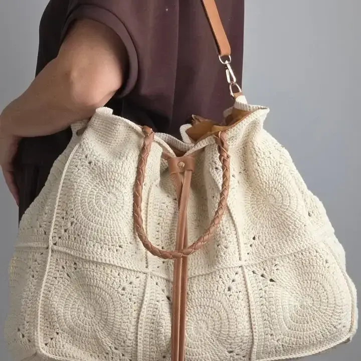

Mariana R.ALUMNA · BOLSO TERMINADO Y EN USO
“Cuando terminé este bolso pensé que se me iba a deformar al usarlo, porque eso me pasaba siempre. Seguà las medidas y el orden del armado y, por primera vez, quedó firme incluso después de ponerle todas mis cosas. No está perfecto, pero lo uso muchÃsimo y varias personas ya me han preguntado dónde lo compré.â€